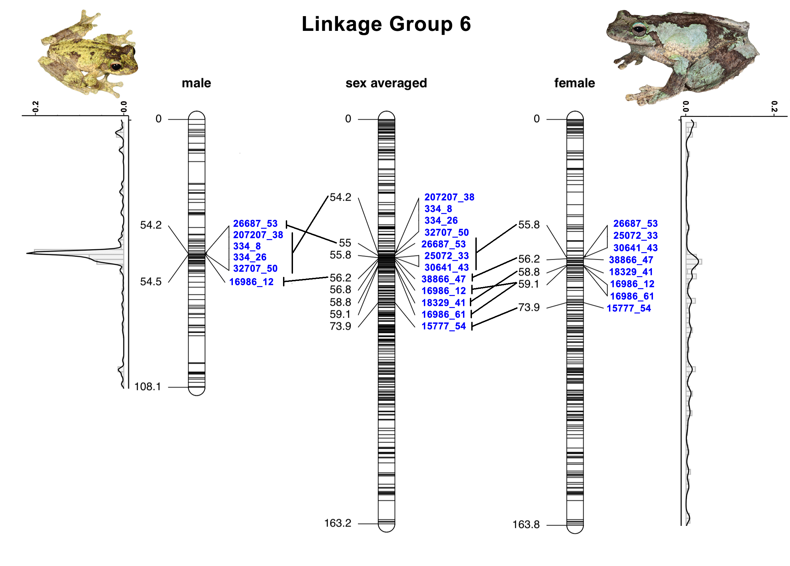

About
In this paper we utilised ddRAD markers produced from one family (2 parents, ~300 F1 offspring) of the Green-eyed Treefrog (Litoria serrata) to produce the first high-density linkage map for any Australopapuan Treefrog (Family: Pelodryadidae). The resulting map covers 13 linkage groups, representing all chromosomes for this species and covering X% of the genome. The overall length of this map is … cM, with an average intermarker distance of … cM.
To provide an example of the utility of such a resource, we assessed sex linkage in a population of this species from a previous study (McKnight et al,. 2019), which used the same ddRAD data. We identified … sex-linked loci. Of these, … could be placed on the linkage map, and all but one occurred on Linkage Group 6 between 50 cM and 52 cM.
